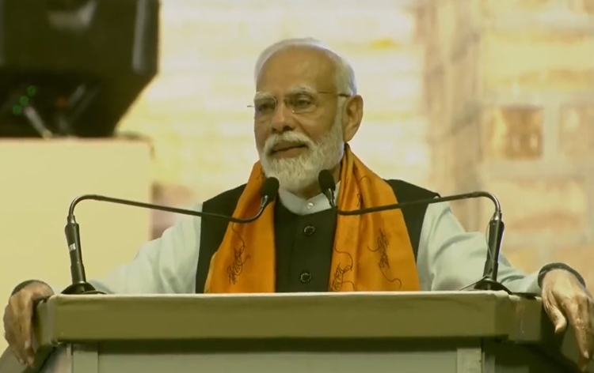
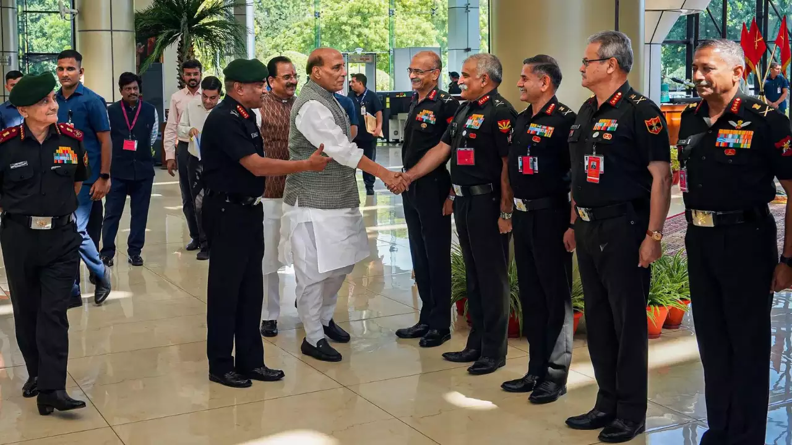

National News
NIA Cautions People about False & Misleading Messages

National Investigation Agency, NIA has cautioned people about certain false and misleading messages circulating on some social media platforms saying that such messages are totally false, fake, and malicious and are a part of a mischievous design to mislead the public. NIA said that everyone is informed that it has not issued any such message asking for such information.
The Agency added that during its investigations, it had come to notice that Islamic State- IS was targeting gullible Indian youth and radicalising them through false propaganda to further its violent and unlawful designs. It said, therefore, an appeal was made in September 2021 that any such suspicious activity may be reported to the authorities, including the NIA on its phone number 011-24368800. NIA has again appealed to the people not to be misled by such fake and false messages like it had in July last year. It has requested the public not to believe, propagate, or forward such false messages. The Agency has clarified that all requests to the public are made on its official handle and not by forwarding messages on any other social media platforms. It said, however, everyone is welcome to join hands with the NIA in safeguarding the country and its people against terrorism by sharing information about terrorist activities and elements.
Govt is working with long-term vision to create positive environment in the country for today's youth to prosper: PM Modi

Prime Minister Narendra Modi has said that the government is working with a long-term vision to create a positive environment in the country for today's youth to prosper. Speaking at the 125th foundation day celebrations of The Scindia School in Gwalior, Mr Modi said with confidence that the young generation will make India a developed nation in the next 25 years. Prime Minister said, several "pending" works such as the abrogation of Article 370, banning of triple talaq, and implementation of the Goods and Services Tax have been accomplished in the last ten years. India has now the world's third largest start-up ecosystem, the prime minister said, adding that from 100 in 2014, the number of start-ups has risen to nearly one lakh. He said, India has the world's second-largest base of Internet users and stands second in mobile phone manufacturing. Mr Modi called upon The Scindia School students to adopt a village, focus on cleanliness, remain "vocal for local", raise awareness about the benefits of natural farming among farmers, adopt a poor family, consume millets, and practice yoga, among other things. Madhya Pradesh Governor Mangu Bhai Patel, Chief Minister Shivraj Singh Chouhan, Union Ministers Jyotiraditya Scindia, Narendra Singh Tomar and Jitendra Singh were also present on the occasion. Related News
Defence Minister Rajnath Singh launches army's project Udbhav aimed at integrating ancient wisdom with modern military pedagogy

Defence Minister Rajnath Singh launches the army's project Udbhav aimed at integrating ancient wisdom with modern military pedagogy. Project Udbhav is a joint collaboration of the Indian Army and the United Service Institution of India. The project aims to promote indigenous discourse through the exploration and integration of the country’s ancient strategic acumen into the contemporary military domain. The Defence Minister also inaugurated the Indian Military Heritage Festival in New Delhi on Saturday. Speaking on the occasion, Mr. Singh said the Indian Military Heritage Festival will inspire the youth of the nation as it showcases the unmatched bravery and invaluable role of the Armed Forces in the security of the country in the last few decades. The two-day festival aims to celebrate India’s rich military culture and heritage, through conversations, art, dance, drama, story-telling, and exhibitions. The festival seeks to create a benchmark in the domain of public engagement with military history and heritage through interaction while adhering to the goals for developing the Armed Forces in the 21st century. It also provides a platform for discussing various contemporary issues relating to India and the world pertaining to security, strategy, and international relations. Talking to reporters after inaugurating the Indian Military Heritage Festival, Mr Singh said it will also make them enthusiastic to know more about the Indian military and their gallant deeds. Related News